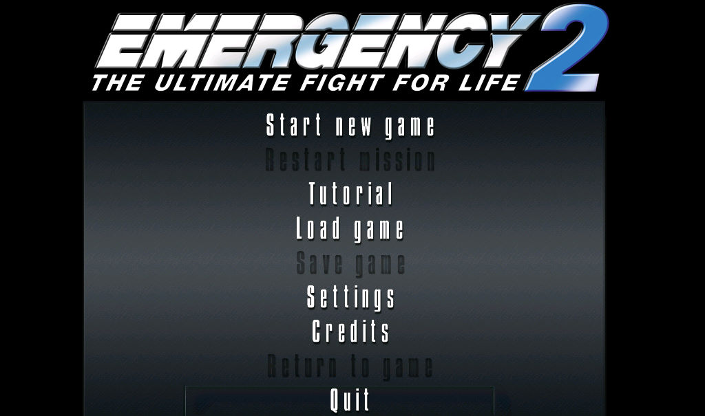
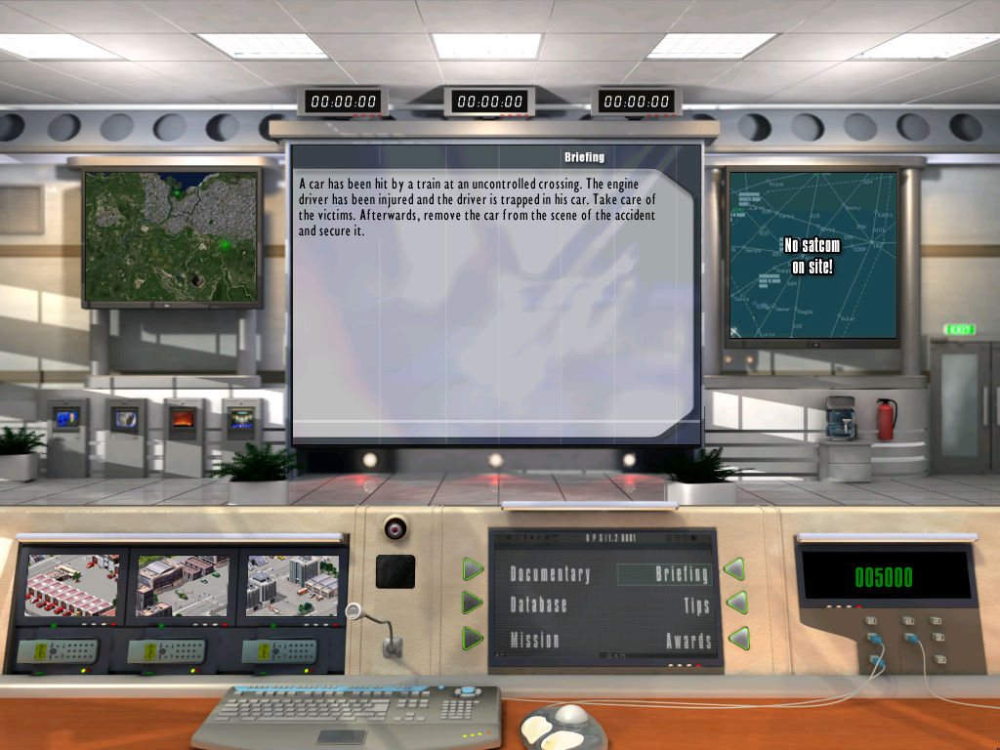

名稱：急難先鋒2／救難先鋒2／第一現場2／搶救行動2 (Emergency 2: The Ultimate Fight for Life，英文版) 簡介：Sixteen Tons 2002年出品的急難救助經營模擬遊戲 [待補]。

保護：光碟SafeDisc 2.80或3.15 限制：檔名有歐洲字元，故只能在純英文語系下的Windows安裝與執行。中文Windows若設成 英文語系安裝，可能會造成StartMenu無法建立執行用的選單，另外，執行時也可能沒 有音樂與音效。 備註：本遊戲光碟有2003/2/4版與2003/12/10版兩種，內容幾乎相同，前者為SafeDisc 2.80 保護，後者為3.15。其中有三個資料檔均只有一個byte不同，暫不知何者為正確。 檔案：nocd13.rar = 1.3更新檔兼免光碟檔